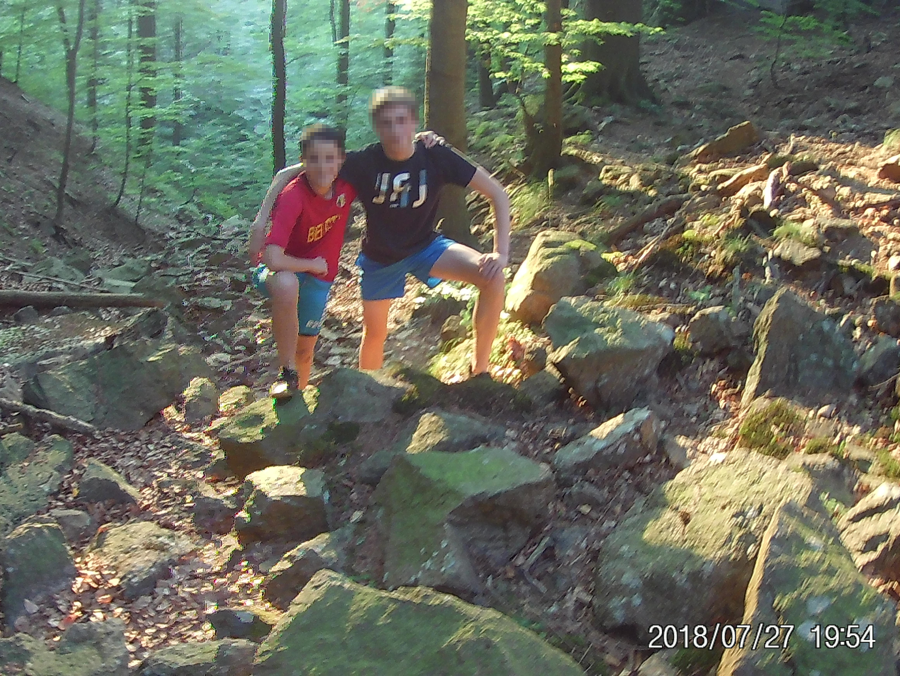
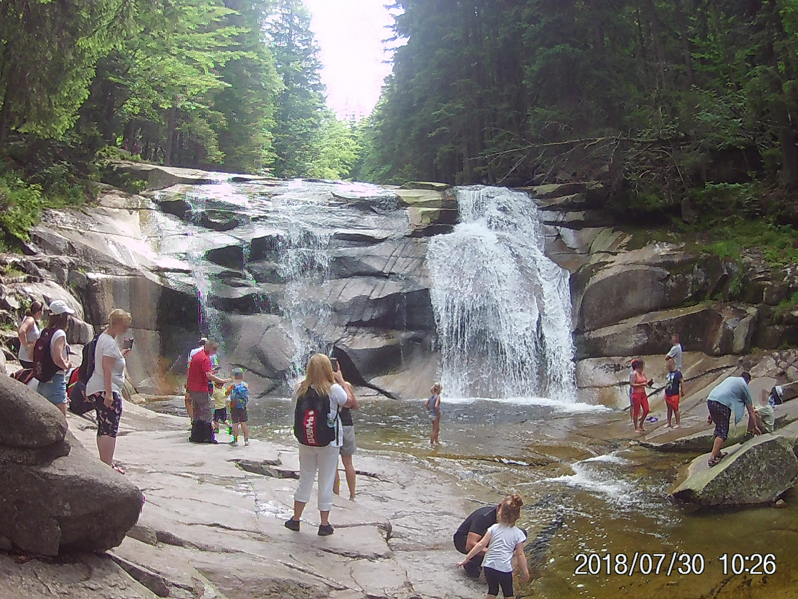

Hieronder vind je de blog zelf van onze reis.
Dag 1:
De eerste dag was goed verlopen! We hebben langer in de auto gezeten dan verwacht en we hebben een wandeling door een rivier gemaakt. Klik op 'Lees meer' voor meer details van dit geweldig begin van de reis!
We begonnen onze roadtrip in Merksplas. We vertrokken in de voormiddag en hoopten tegen de vroege namiddag in het hotel aan te komen. Er was echter meer verkeer dan verwacht, waardoor we pas in de avond in Duitsland aankwamen. De rit zelf was heel confortabel. (Buiten was het bijna 40°!) We zijn onderweg 1 keer gestopt bij een rivier in Vlothe.
Toen we alles hadden uitgeladen en gewinkeld hadden, gingen we rond zeven uur door de rivier 'de Ilse' wandelen. De stenen waren heel glad en glibberig, dus was het moeilijk om recht te blijven staan. Ook waren er vele kleine watervalletjes. Na een kilometer door de Ilse gewandeld te hebben, wachtte er nog een stijle helling naar de top op ons. Met veel moeite kwamen we uiteindelijk boven aan en konden we op een bankje genieten van het prachtige uitzicht!
Survival stats:
Meest gevallen: Papa
Snelst moe: Robbe
Als eerste de top bereikt: Robbe en Sander
Meeste stappen gezet: Sander
Meeste steentjes in schoenen: Robbe
Meest natte kleren: Papa
Vanwege slechte wifi konden we dit bericht pas later uploaden.
De komende dagen komen er nieuwe blogberichten online, hopelijk zien we je dan weer!
Vergeet ook niet deze webpagina in te stellen als favoriet! ;)
Robbe en Sander
Dag 2:
 Vandaag zijn we aangekomen in Tsjechië! Klik op 'Lees meer' om te weten hoe deze dag verliep!
Vandaag zijn we aangekomen in Tsjechië! Klik op 'Lees meer' om te weten hoe deze dag verliep!
Eerst namen we een tussenstop in Leipzig. Daar zwommen we in een groot meer, met heel helder water en vissen. Nadat we aankwamen in het hotel besloten we in de McDonalds te gaan eten. We gingen er te voet door het centrum heen en kwamen onderweg de typische, pitoreske Tsjechische huizen en diverse dingen zoals een zandsculptuur tegen. 's Avonds konden we nog genieten van een heerlijke douche.
Vanwege slechte wifi konden we dit bericht pas later uploaden.
De komende dagen komen er nieuwe blogberichten online, hopelijk zien we je dan weer!
Vergeet ook niet deze webpagina in te stellen als favoriet! ;)
Robbe en Sander
Dag 3:
 We zijn vandaag aangekomen in het stadje Harrachov, waar we 2 nachten zullen blijven slapen in een sporthotel. Klik op 'Lees meer' om meer te weten te komen!
We zijn vandaag aangekomen in het stadje Harrachov, waar we 2 nachten zullen blijven slapen in een sporthotel. Klik op 'Lees meer' om meer te weten te komen!
Deze dag startten we met een lange wandeling naar de top van de berg waar we beloond werden met een prachtig uitzicht over de stad en de bergen. Op onze terugweg naar beneden kwamen we een bronkraantje tegen in de bergwand waar water uit een bron uit vloeide. Dit water smaakte heel goed!
's Middags picknickten we bij een meertje. Daarna reden we de laatste kilometers tot in Harrachov. Hier zagen we veel skihotels en skiliften.
We eindigden onze dag met een wandeling. Onderweg kwamen we een ooievaar tegen!
De komende dagen komen er nieuwe blogberichten online, hopelijk zien we je dan weer! Vergeet ook niet deze webpagina in te stellen als favoriet! ;)
Robbe en Sander
Dag 4:
Het was moeilijk om een activiteit te vinden die we konden doen, maar uiteindelijk was het toch gelukt! Klik op 'Lees meer' voor meer info!
We verlieten ons hotel en bezochten een waterval. Daarna waren we van plan om met een mountainbike van de berg te rijden. We werden van het kastje naar de muur gestuurd waarna uiteindelijk bleek dat de laatste 3 fietsen net verhuurd waren. Daarom besloten we om met een step te downhillen. Maar ook daar was alles verhuurd.
We gaven bijna de hoop op, totdat we op de terugweg een rodelbaan en een touwenparkour tegenkwamen. Zowel de rodelbaan als het touwenparkour waren heel lang. We zaten zelfs een uur en drie kwartier op het parkour! Er waren ook 8 ziplines, waarvan de allerlaatste wel 150m was!
's Avonds beklom papa nog snel even de berg met een uitzicht op Polen. Toen hij terug was, oefenden we nog even met de drone. Het was alleen te donker om foto's te maken.
De komende dagen komen er nieuwe blogberichten online, hopelijk zien we je dan weer! Vergeet ook niet deze webpagina in te stellen als favoriet! ;)
Robbe en Sander
Dag 5:
 Vandaag deden we een citytrip in de hoofdstad van Tsjechië, namelijk Praag! Klik op 'Lees meer' voor meer info!
Vandaag deden we een citytrip in de hoofdstad van Tsjechië, namelijk Praag! Klik op 'Lees meer' voor meer info!
We vertrokken na 2 dagen in de natuur van het reuzegebergte naar Praag. In onze hotelkamer hadden we al meteen een mooi uitzicht. We gingen richting de oude stad om zo ook de Karlsbrug te bezichtigen. De zomerse zon zorgde ervoor dat we al snel dorst kregen en zin kregen in een lekkere cocktail.
Na een flinke stadswandeling en een lekker diner konden we genieten in de koelte van de airco in de hotelkamer. De rest van de avond hebben we gechild in de kamer en o.a. kaartspellen gespeeld.
De komende dagen komen er nieuwe blogberichten online, hopelijk zien we je dan weer!
Vergeet ook niet deze webpagina in te stellen als favoriet! ;)
Robbe en Sander
Dag 6:
 We zijn na 2 uurtjes rijden aangekomen in ons hotel in een golf-resort waar we opnieuw 2 nachten gaan overnachten! Klik op 'Lees meer' voor meer info!
We zijn na 2 uurtjes rijden aangekomen in ons hotel in een golf-resort waar we opnieuw 2 nachten gaan overnachten! Klik op 'Lees meer' voor meer info!
Nadat we alles hadden uitgeladen, namen we al snel een duik en mooie flips in het zwembad van het hotel. Dit was heel verfrissend bij de hoge temperaturen.
We hebben ook met de drone gevlogen. De golfterreinen waren daar een perfecte locatie voor. Ondertussen reserveerden we al een raft voor morgen.
's Avonds aten we in een lekker Italiaans restaurant in het centrum van Krumlov.
De komende dagen komen er nieuwe blogberichten online, hopelijk zien we je dan weer!
Vergeet ook niet deze webpagina in te stellen als favoriet! ;)
Robbe en Sander
Dag 7:
 Onze laatste dag in Tsjechië zit erop! We hebben gezorgd voor een geweldige afsluiter met een rafttocht van 27 km. Klik op 'Lees meer' om te weten wat we allemaal gedaan hebben!
Onze laatste dag in Tsjechië zit erop! We hebben gezorgd voor een geweldige afsluiter met een rafttocht van 27 km. Klik op 'Lees meer' om te weten wat we allemaal gedaan hebben!
We stonden al vroeg op om om 8 uur aan de ontbijttafel te zitten. Na een heerlijk ontbijt reden we met een busje naar de startplaats. Het weer zat weeral mee! Het eerste deel van de tocht konden we rustig genieten van het zonnetje en het verfrissende water. De laatste 5 kilometer volgden er vele stroomversnellingen elkaar snel op.
Deze dag hebben we afgesloten met een duik in het zwembad van het hotel en een heerlijk diner in het plaatselijke restaurant.
Dit was het laatste blogbericht van onze roadtrip! Morgen vertrekken we richting België met een overnachting in het Duitse Wiesbaden.
Leuk dat je deze blog hebt bekeken en tot volgende keer!
Robbe en Sander